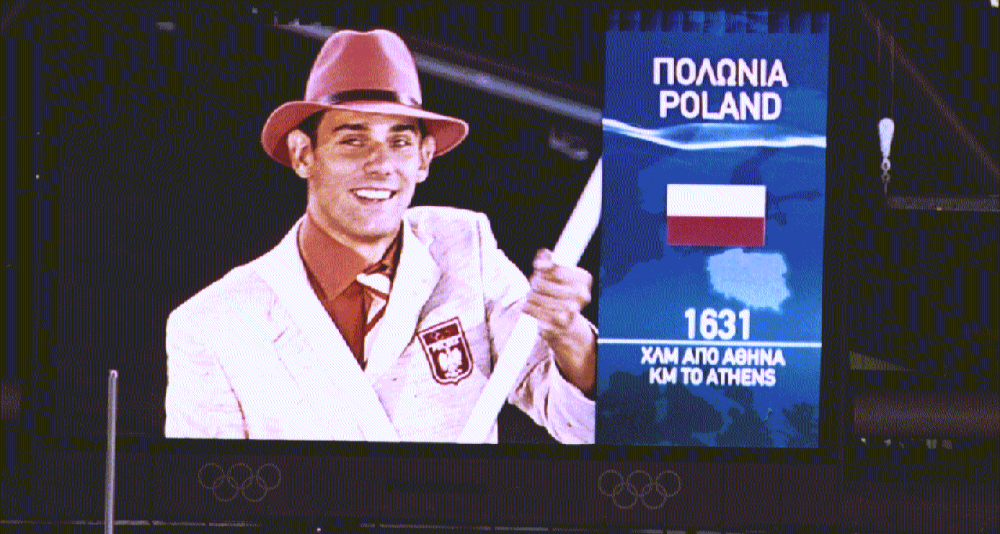
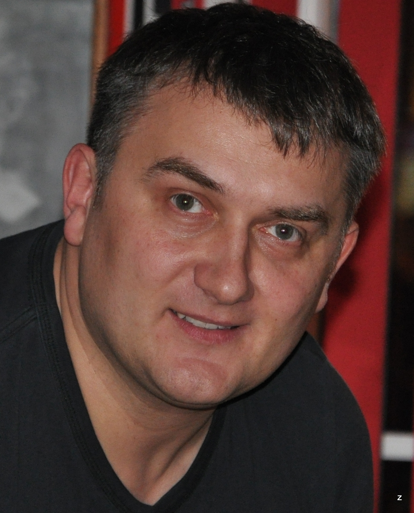
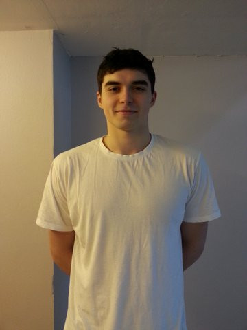
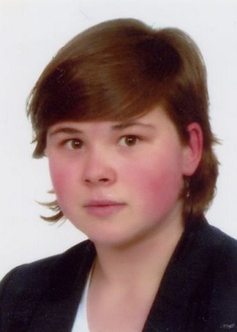
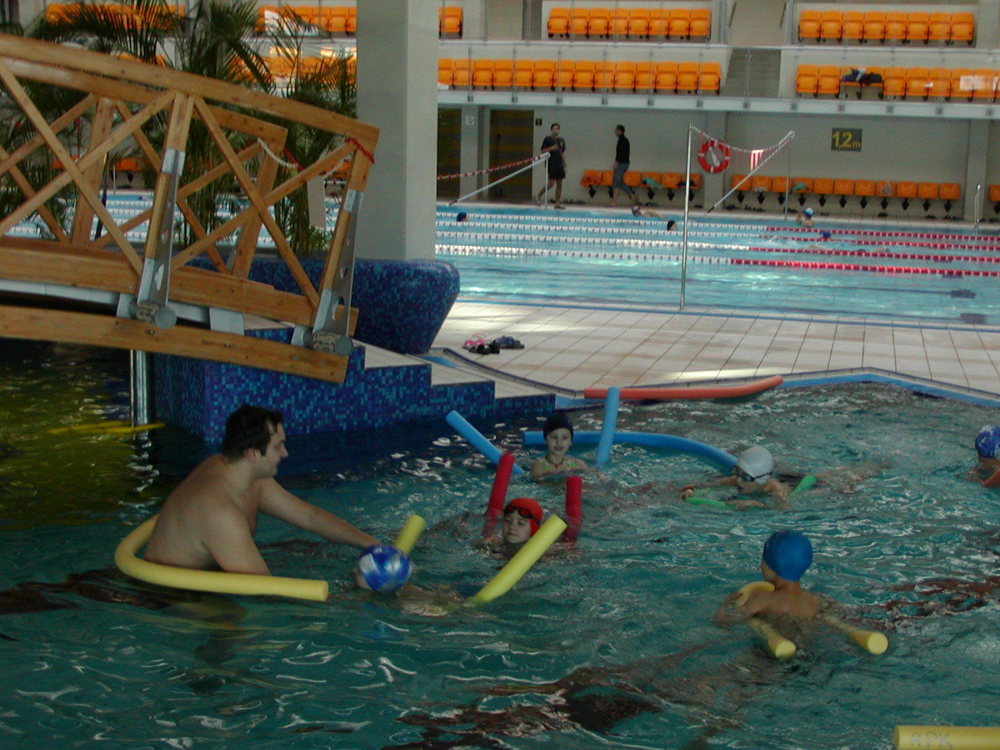
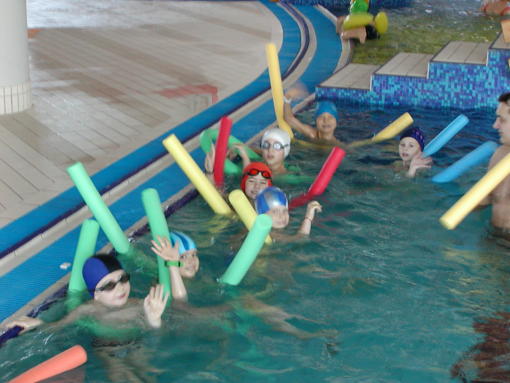

Właściciele

mgr Bartosz Kizierowski
olimpijczyk z Atlanty 1996, z Sydney 2000, z Aten 2004 (chorąży), Pekin 2008
mistrz Europy
medalista Mistrzostw Świata
medalista Uniwersjady
wielokrotny mistrz Polski
aktualny trener Konrada Czerniaka i kadry Hiszpanii
absolwent Uniwersytetu Kalifornijskiego w Berkeley
olimpijczyk z Atlanty 1996, z Sydney 2000, z Aten 2004 (chorąży), Pekin 2008
mistrz Europy
medalista Mistrzostw Świata
medalista Uniwersjady
wielokrotny mistrz Polski
aktualny trener Konrada Czerniaka i kadry Hiszpanii
absolwent Uniwersytetu Kalifornijskiego w Berkeley
mgr Grzegorz Kircun
absolwent AWF w Warszawie
mistrz i rekordzista Polski
trener II klasy pływania
ratownik wodny
sędzia pływania
menedżer sportu
wieloletnia praktyka pedagogiczna
absolwent AWF w Warszawie
mistrz i rekordzista Polski
trener II klasy pływania
ratownik wodny
sędzia pływania
menedżer sportu
wieloletnia praktyka pedagogiczna

Nasi Trenerzy

Karolina Zapendowska
- Instruktor dyscypliny sportu- specjalizacja pływanie
- ratownik wodny WOPR
- medalistka i finalista Mistrzostw Polski

- Instruktor Rekreacji Ruchowej - specjalizacja pływanie
- Ratownik Wodny WOPR
- były rekordzista i zawodnik Polonii W-wa i BUKS W-wa
Igor Skibiński
- Instruktor Dyscypliny Sportu - specjalizacja pływanie- Instruktor Rekreacji Ruchowej - specjalizacja pływanie
- Ratownik Wodny WOPR
- były rekordzista i zawodnik Polonii W-wa i BUKS W-wa

- Instruktor Rekreacji Ruchowej - specjalizacja pływanie
- Ratownik Wodny WOPR
- Medalistka i finalistka Mistrzostw Polski
Agata Lewandowska
- Instruktor Dyscypliny Sportu - specjalizacja pływanie- Instruktor Rekreacji Ruchowej - specjalizacja pływanie
- Ratownik Wodny WOPR
- Medalistka i finalistka Mistrzostw Polski
Plan Zajęć
Mały basen:
- zajęcia od podstaw dla dzieci w wieku 4 - 7 lat
wtorek, czwartek - 18.45, 19.15
sobota - 10.30, 11.00, 11.30, 12.00
Duży basen:
- grupa słaba :
wtorek, czwartek - 18.00
piątek - 18.00, 18.30
sobota - 10.30, 11.00
- grupa średniozaawansowana:
wtorek - 18.30
środa - 18.00, 18.30
czwartek - 18.30
sobota - 11.30
- grupa zaawansowana:
wtorek, środa,czwartek, piatek - 19.00
sobota - 12.00
- zajęcia od podstaw dla dzieci w wieku 4 - 7 lat
wtorek, czwartek - 18.45, 19.15
sobota - 10.30, 11.00, 11.30, 12.00
Duży basen:
- grupa słaba :
wtorek, czwartek - 18.00
piątek - 18.00, 18.30
sobota - 10.30, 11.00
- grupa średniozaawansowana:
wtorek - 18.30
środa - 18.00, 18.30
czwartek - 18.30
sobota - 11.30
- grupa zaawansowana:
wtorek, środa,czwartek, piatek - 19.00
sobota - 12.00


Regulamin
- Uczestnicy zobowiązani są do zapoznania się z regulaminem zajęć Akademii Pływania Kizierowskiego i do jego przestrzegania.
- W zajęciach mogą brać udział jedynie osoby, u których nie stwierdzono żadnych medycznych przeciwwskazań do zajęć w wodzie.
- Uczestnicy zobowiązani są do zapoznania się z regulaminem pływalni, na której odbywają się zajęcia i do jego przestrzegania.
- Na płytę basenu mogą wejść osoby przebrane w stój sportowy oraz klapki.
- Osoby robiące zdjęcia lub nagrywające filmy podczas zajęć, proszone są o posiadanie stroju sportowego: klapki, spodenki, koszulka.
- Wszelkie kwestie organizacyjne prosimy uzgadniać z instruktorami i pracownikami Akademii Pływania Kizierowskiego.
- Do uczestnictwa w zajęcia uprawnia imienny karnet. Karnetu nie można udostępniać osobom trzecim.
- Karnet na zajęcia uprawnia do otrzymania 60-minutowej wejściówki na basen. Przekroczenie tego czasu zobowiązuje rodziców/opiekunów do dokonania dopłaty za każdą przekroczoną minutę wg cennika pływalni kasie w OSiR-u.
- Akademia Pływania Kizierowskiego nie ponosi odpowiedzialności za rzeczy pozostawione w szatni oraz na płycie basenu.
- W przypadku ZGŁOSZONEJ nieobecności zajęcia można odrobić z inna grupą. Termin odrobienia zajęć należy każdorazowo uzgodnić. Zajęcia można odrabiać jedynie w czasie obowiązywania karetu. Nieodrobione zajęcia nie przechodzą na kolejny kurs.
- Nieobecności należy zgłaszać sms’em na numer 600 878 430 lub mail’em na adres: info@akademia-kizierowskiego.pl
- Akademia Pływania Kizierowskiego zastrzega sobie prawo do zmiany regulaminu.
Kontakt w celu :
Uzyskania Informacji, zapisów i zgłaszania nieobecnościprosimy dzwonić pod numer telefonu:
+48 600 878 430
Kontakt w celu uzyskania informacji i zapisów:
e-mail: info@akademia-kizierowskiego.pl
Sprawy organizacyjne Grzegorz Kircun numer telefonu:
+48 600 832 015
Nr konta Akademii
92 1050 1054 1000 0022 7868 8334